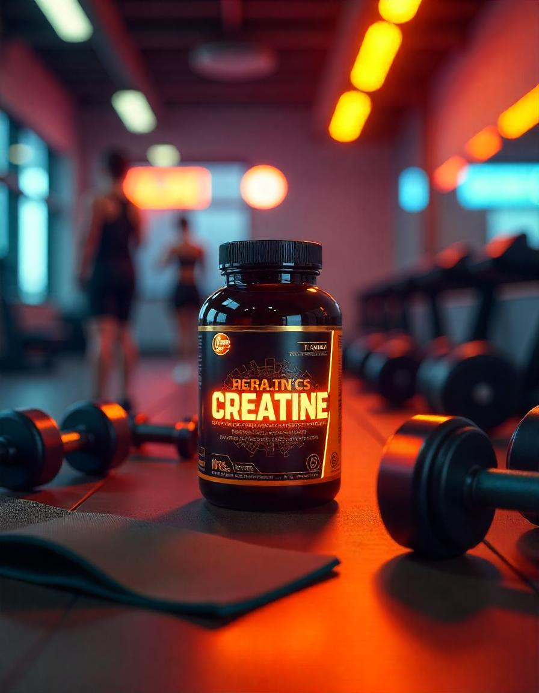

A creatina é um suplemento popularmente utilizado para aumentar a força e melhorar o desempenho durante
atividades de alta intensidade, como levantamento de peso e sprints. Ela ajuda a fornecer energia rápida
para os músculos.
Benefícios da Creatina:
- Aumento da força e potência durante treinos de alta intensidade.
- Melhora no desempenho atlético, especialmente em atividades curtas e intensas.
- Aumento da capacidade de recuperação muscular após o exercício.
- Potencial auxílio no aumento da massa muscular.
Onde Encontrar a Creatina
A Creatina pode ser encontrada em diversas lojas especializadas em suplementos alimentares, como:
- Loja X - Rua das Suplementos, 123
- Farmácia Y - Avenida da Saúde, 456
- Online: Sites como Mercado Livre, Amazon, e lojas especializadas em nutrição esportiva
Como Tomar a Creatina
A Creatina deve ser consumida de acordo com suas necessidades e com o objetivo de melhorar o desempenho
físico. A forma mais comum de consumo é:
- 1 porção (normalmente 5g) dissolvida em água ou suco, preferencialmente após o treino.
- Em ciclos de "carregamento" (20g por dia, divididos em 4 doses) e "manutenção" (5g por dia) para
maximizar os efeitos.
Evite misturar com líquidos com alto teor de açúcar, como sucos industrializados, para não interferir na
absorção.
Como é Produzida a Creatina
A creatina é sintetizada a partir de aminoácidos e é extraída de fontes como carne vermelha e peixe. Para
produção comercial, ela passa pelas seguintes etapas:
- Extração de matérias-primas de fontes naturais (como carne e peixe).
- Processamento químico para criar creatina monohidratada, a forma mais comum e eficaz.
- Secagem do produto em pó, garantindo sua estabilidade e qualidade.
- Embalagem e distribuição para consumo.
Este processo assegura que a creatina seja eficiente, segura e fácil de consumir, ajudando no desempenho
atlético e recuperação muscular.